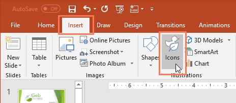
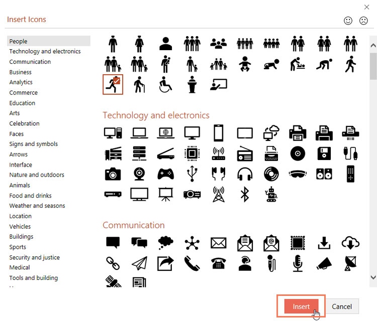
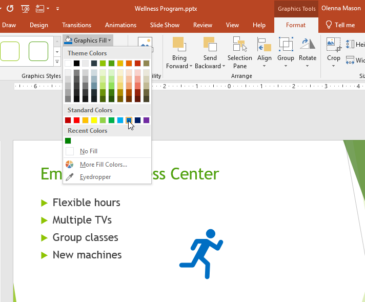
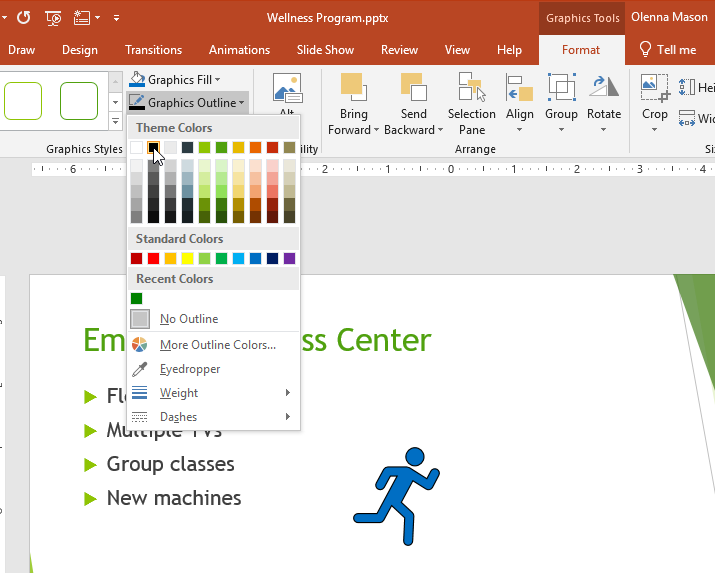
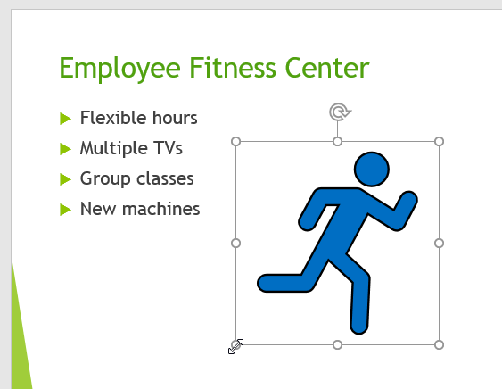
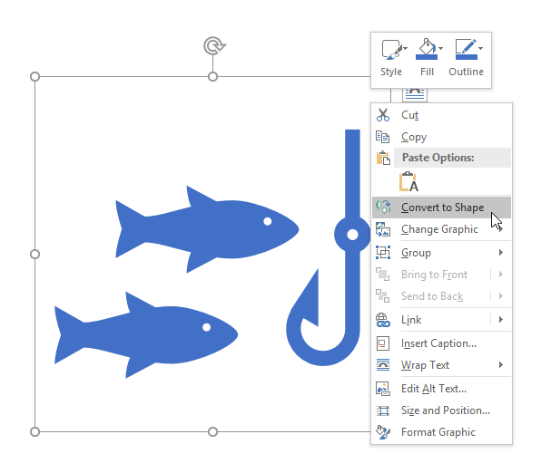
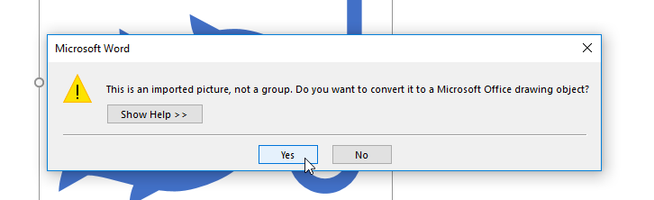
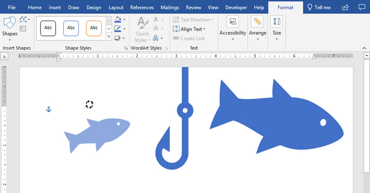

/en/excel/using-the-draw-tab/content/
Nếu bạn cần đồ họa cho một dự án, bạn có thể sử dụng một tính năng có tên làbiểu tượng. Biểu tượng là một thư việnđồ họa hiện đại, chuyên nghiệpđi kèm với Office 365 và 2019 và chúng có thể đượctùy chỉnhđể phù hợp với nhu cầu của bạn. Các biểu tượng có sẵn trongWord,Excel,OutlookvàPowerPoint.
Xem video dưới đây để tìm hiểu thêm về các biểu tượng.
Để chèn một biểu tượng, hãy nhấp vào tabChènrồi chọnBiểu tượng.

Trình đơnChèn biểu tượngsẽ xuất hiện. Bạn có thể cuộn qua nhiều chủ đề khác nhau, bao gồm con người, công nghệ, thương mại, nghệ thuật, v.v. Khi bạn tìm thấy biểu tượng mình thích, hãy chọn biểu tượng đó rồi nhấp vàoChèn.

Sau khi chèn biểu tượng, có một số cách khác nhau để bạn có thể tùy chỉnh biểu tượng đó.
Để thay đổimàucủa một biểu tượng, hãy chọn biểu tượng bạn muốn chỉnh sửa. TabĐịnh dạngsẽ xuất hiện. Sau đó nhấp vàoGraphics Fillvà chọn màu từ menu thả xuống.

Để thêmđường viềnvào biểu tượng của bạn, hãy nhấp vàoHình dạng đường viềnvà chọn màu từ menu thả xuống.

Bạn cũng có thể thay đổikích thướccủa biểu tượng bằng cách giữ một trong cácbộ điều khiển định cỡvà kéo biểu tượng đó. Vì chúng làđồ họa vectornên bạn có thể tạo biểu tượng lớn như bạn muốn mà không trông như bị pixel.

Một số biểu tượng có thể đượcchia thành các phần riêng biệt, cho phép bạn chỉnh sửa từng phần riêng lẻ để tùy chỉnh thêm.

2. Nhấp vàoCótrong hộp thoại.
3. Nếu biểu tượng của bạn có các phần riêng lẻ thì giờ đây bạn có thể tự chỉnh sửa từng phần, thay đổi kích thước, màu sắc và vị trí của phần đó.
Các biểu tượng cung cấp rất nhiều khả năng để tùy chỉnh giao diện dự án của bạn. Hãy dùng thử nếu bạn đang tìm kiếm một số hình ảnh đơn giản, bóng bẩy để nâng cao nội dung của mình.
/en/excel/excel-quiz/content/